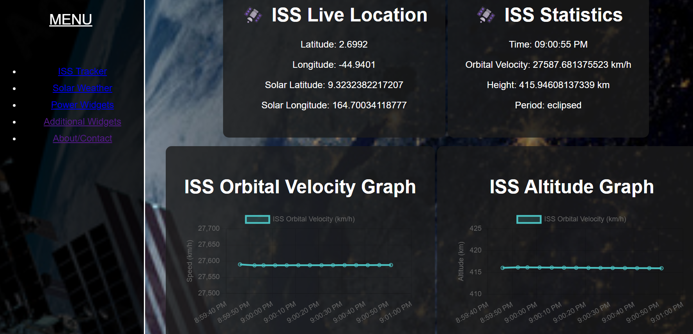
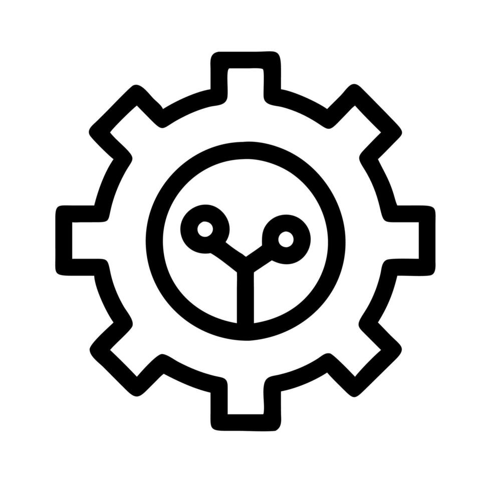
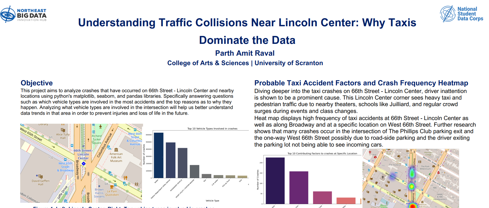
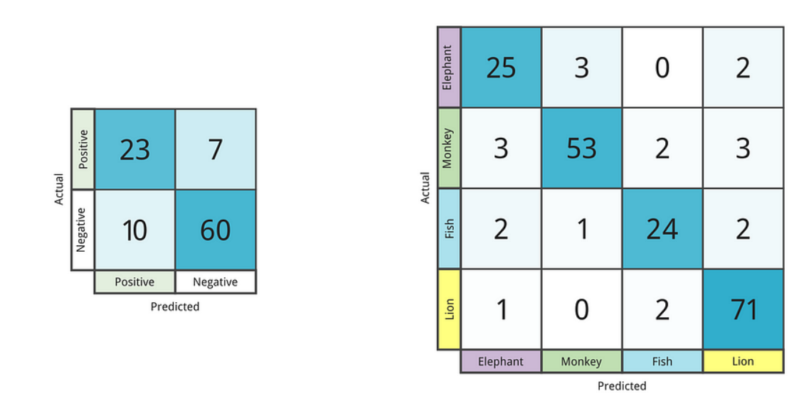
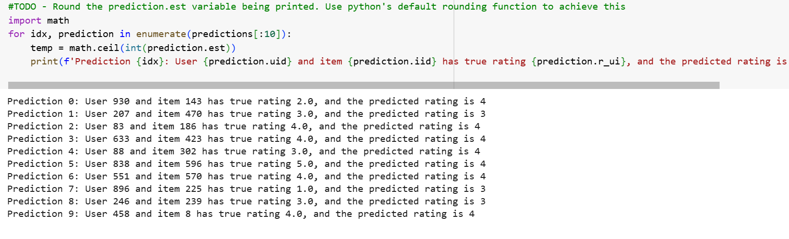
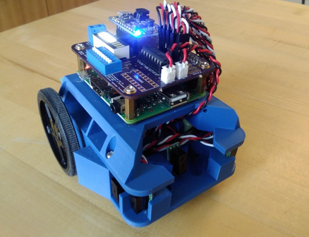
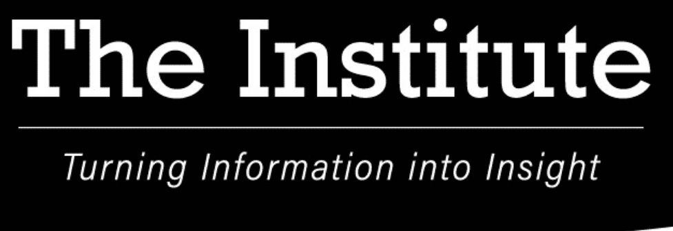

ISS Live Dashboard
A live space-station dashboard with telemetry, visualizations, and tools for exploring orbital data.
Electrical Engineering student · University of Scranton
I'm Parth Raval. I enjoy turning complex ideas into useful things—from spacecraft power systems and data research to interactive web projects.

Curious by designA selection of my work
A mix of engineering, research, and software projects—each one a chance to learn by building.

A live space-station dashboard with telemetry, visualizations, and tools for exploring orbital data.

Analyzed transportation trends to develop data-driven recommendations for New York City drivers, using Python and data visualization.

Explored Capsule Networks for classifying COVID-19 radiography images and recognizing spatial patterns in medical imagery.

Built a movie recommendation model using Singular Value Decomposition to explore personalized recommendations.

Programmed and tested a Raspberry Pi-controlled robot to navigate a maze using five sensors.
Source code is not currently published.

Used U.S. Census data to build tables covering demographics, employment, and population growth across 14 Luzerne County boroughs.
Engineering experience
Contributed to a spacecraft mission concept, focusing on the electrical power subsystem, and presented the design as part of a Preliminary Design Review.
Let's connect
I'm always glad to connect about engineering, research, and technology.